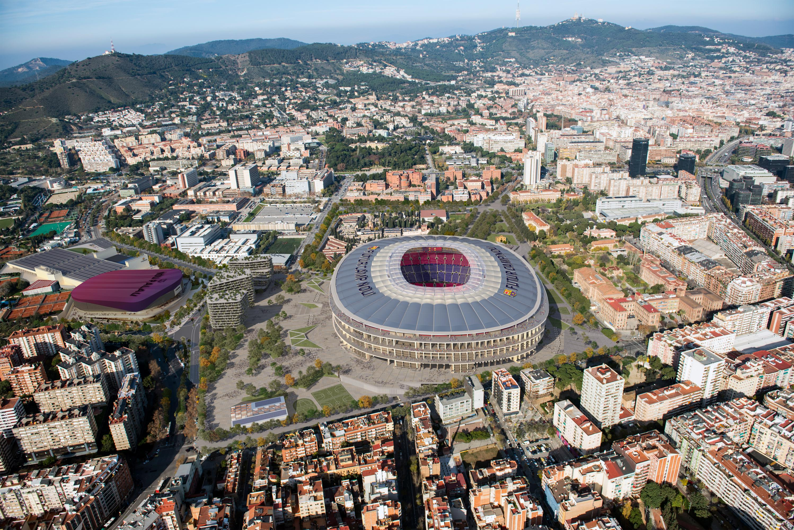
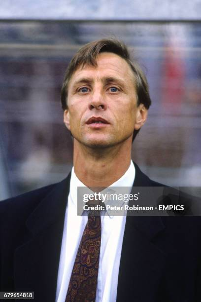
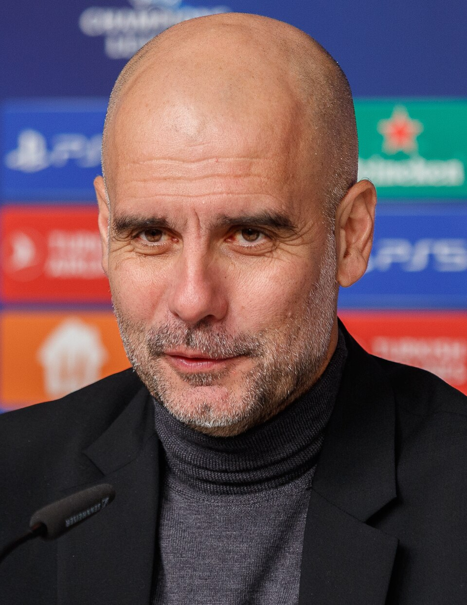
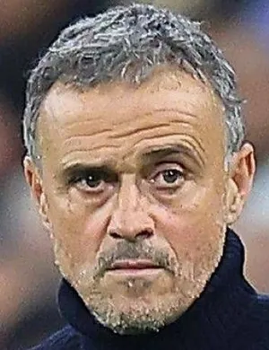

FC Barcelona was founded in 1899 by a group of Swiss, English, and Catalan players led by Joan Gamper. Since then, it has become one of the most iconic football clubs in the world.
Més que un club ("More than a club") expresses Barça’s strong ties to Catalan culture, politics, and community identity.
|
The legendary Camp Nou, opened in 1957, has hosted countless unforgettable moments in football history. Currently, FC Barcelona is rebuilding it into the new Spotify Camp Nou, which will become one of the most advanced stadiums in the world. The new design will have a total capacity of around 105,000 spectators, although the first phase will open with about 27,000 seats available during construction. The renovation will include a new roof, improved seating, modern facilities, and enhanced fan experiences, making it a true landmark for football fans worldwide. |
 |
| Photo | Name | Years | Games | Wins | Draws | Losses | Trophies Won |
|---|---|---|---|---|---|---|---|
 |
Johan Cruyff | 1988–1996 | 430 | 250 | 110 | 70 | 11 |
 |
Pep Guardiola | 2008–2012 | 247 | 179 | 47 | 21 | 14 |
 |
Luis Enrique | 2014–2017 | 181 | 138 | 22 | 21 | 9 |
Barça is famous for Tiki-Taka, a possession-based style built on short passes, intelligence, and pressing, developed at La Masia academy.
The rivalry between FC Barcelona and Real Madrid — known as El Clásico — is the most famous and passionate football rivalry in the world. It represents not just two clubs, but also two different cultures and regions: Catalonia and Castile.
The first official El Clásico was played in 1902. Since then, both clubs have battled for dominance in Spain and Europe, featuring legendary players like Lionel Messi, Ronaldinho, Cristiano Ronaldo, and Xavi.
One of the most memorable matches came in 2009, when Pep Guardiola’s Barcelona defeated Real Madrid 6–2 at santiago bernabéu — a game often called “football perfection.”
| Statistic | FC Barcelona | Real Madrid |
|---|---|---|
| Total Official Matches (as of 2025) | 261 | 261 |
| Wins | 105 | 106 |
| Draws | 51 | 51 |
| Biggest Win | 6–2 (2009 LaLiga) | 11–1 (1943 Copa del Rey) |
| Total Goals Scored | 440 | 443 |
| Top Scorer in El Clásico | Lionel Messi – 26 | Cristiano Ronaldo – 18 |
Every El Clásico is more than just a match — it’s a battle of pride, culture, and history that defines Spanish football and inspires millions around the globe.